Bài 02: Các bài toán tối ưu lồi
Cơ sở toán học cho AI
Viện Trí tuệ nhân tạo
Năm học 2026–2027 · Học kỳ 1
Nội dung chính
- Mô hình hóa và chứng nhận tính lồi
- Quy hoạch tuyến tính
- Quy hoạch bậc hai và ràng buộc bậc hai
- Quy hoạch hình học
- Xấp xỉ lồi và nới lỏng
- Lựa chọn biểu diễn và đánh giá nghiệm
Bài toán tối ưu lồi tổng quát
Biến quyết định $x\in\mathbb{R}^n$.
$$\min_{x\in C} f_0(x)$$
Hàm mục tiêu
$f_0:C\to\mathbb{R}$ là hàm lồi.
Tập khả thi
$C\subseteq\mathbb{R}^n$ là tập lồi.
Dạng phổ biến của tối ưu lồi
Biến quyết định $x\in\mathbb{R}^n$.
$$\begin{aligned}
\min_{x\in\mathbb{R}^n}\;& f_0(x)\\
\text{với}\quad & f_i(x)\le 0,\quad i=1,\ldots,m,\\
& Ax=b.
\end{aligned}$$
$f_0,f_1,\ldots,f_m$ là các hàm lồi.
Đẳng thức affine: $A\in\mathbb{R}^{p\times n}$, $b\in\mathbb{R}^p$.
Các ràng buộc trên xác định tập khả thi $C$ lồi.
Ví dụ: hàm bậc hai
$$\min_{0\le x\le1}\; (x-2)^2$$
Nét đậm: phần khả thi.
Tập khả thi: $C=[0,1]$ là đoạn lồi.
Hàm mục tiêu: $f_0''(x)=2>0$, nên $f_0$ lồi.
Nghiệm: $x^\star=1$, $f_0(x^\star)=1$.
Ở đây, nghiệm tối ưu nằm trên biên.
Ví dụ: hàm giá trị tuyệt đối
$$\min_{x\in\mathbb{R}}\; |x-2|$$
Thanh hai chiều: $C=\mathbb{R}$.
Tập khả thi: $C=\mathbb{R}$ lồi.
Hàm mục tiêu: $|x-2|$ lồi theo bất đẳng thức tam giác.
Nghiệm: $x^\star=2$, $f_0(x^\star)=0$.
Hàm mục tiêu lồi không nhất thiết khả vi.
Ví dụ: hàm nghịch đảo
$$\min_{x>0}\; \frac{1}{x}$$
Vòng rỗng: loại $x=0$.
Tập khả thi: $C=(0,+\infty)$ lồi.
Hàm mục tiêu: $f_0''(x)=2/x^3>0$ trên $C$.
Cận dưới: $\inf_{x>0}1/x=0$, không có nghiệm tối ưu.
Bài toán lồi chưa chắc có nghiệm tối ưu.
2
Quy hoạch tuyến tính
Pha trộn cho một vườn ươm
Một vườn ươm chuẩn bị hỗn hợp bón cho một luống cây. Hỗn hợp cần cung cấp đủ lượng nitơ và phốtpho theo yêu cầu.
Nguyên liệu I
Nhiều nitơ hơn trong mỗi kg, nhưng giá cao hơn.
Nguyên liệu II
Rẻ hơn theo kg, nhưng cần dùng nhiều hơn để đủ nitơ.
Người phụ trách có thể mua và phối trộn hai loại với lượng tùy chọn, kể cả phần lẻ của một kg.
Cần quyết định: dùng bao nhiêu kg mỗi loại để đủ dinh dưỡng với chi phí thấp nhất.
Mô hình pha trộn
Chọn lượng hai nguyên liệu cho luống cây; số liệu minh họa.
| Nguyên liệu | I | II |
|---|
| Giá (10 nghìn đồng/kg) | 3 | 2 |
| Nitơ (g/kg) | 2 | 1 |
| Phốtpho (g/kg) | 1 | 2 |
Biến: $x_1,x_2$ kg nguyên liệu I, II.
Cần ít nhất 4 g nitơ và 5 g phốtpho.
$$\begin{aligned}
\min\;& 3x_1+2x_2\\
\text{với}\quad & 2x_1+x_2\ge 4,\\
& x_1+2x_2\ge 5,\\
& x_1,x_2\ge 0.
\end{aligned}$$
Phương án ban đầu: chỉ dùng II, 4 kg, chi phí 80 nghìn đồng.
Dạng phổ biến của quy hoạch tuyến tính
Biến $x\in\mathbb{R}^n$; dữ liệu $c, G, h, A, b$.
$$\begin{aligned}
\min\;& c^Tx\\
\text{với}\quad & Gx\le h,\\
& Ax=b.
\end{aligned}$$
Mục tiêu affine nên lồi.
Tập khả thi là giao các nửa không gian và siêu phẳng lồi.
Dạng chuẩn của quy hoạch tuyến tính
Từ $\min c^Tx$ với $Gx\le h$, $Ax=b$, $x\in\mathbb R^n$.
Dạng chuẩn
$$\begin{aligned}\min_{z\ge0}\;&d^Tz\\\text{với}\quad&Bz=e.\end{aligned}$$
$z=(x^+,x^-,s)$.
Chuyển đổi
- Biến tự do: $x=x^+-x^-$, với $x^+,x^-\ge 0$.
- Bất đẳng thức: $Gx+s=h$, với $s\ge 0$.
- Giữ các đẳng thức $Ax=b$.
Nghiệm của bài toán pha trộn
 Biên liền: $2x_1+x_2=4$.
Biên liền: $2x_1+x_2=4$.
Biên đứt: $x_1+2x_2=5$.
Nghiệm tối ưu: $x^\star=(1,\,2)$.
Nitơ $=4$ g, phốtpho $=5$ g (đủ đúng yêu cầu).
Chi phí: $3\cdot1+2\cdot2=7$, tức 70 nghìn đồng.
Câu hỏi: Nếu giá nguyên liệu I tăng từ 3 lên 4, nghiệm thay đổi thế nào?
Hồi quy với sai số tuyệt đối
Dự đoán đầu ra từ một đặc trưng, đánh giá tổng độ lệch.
| $u_i$ | $-2$ | $-1$ | $0$ | $1$ | $2$ |
|---|
| $y_i$ | $-2$ | $-1$ | $3$ | $1$ | $2$ |
Dữ liệu minh họa đã chuẩn hóa.
Mô hình: $\hat{y}_i=au_i+b$, tức $w=(a,b)$.
$X$ có hàng thứ $i$ là $(u_i,1)$; $w\in\mathbb{R}^2$.
$r=Xw-y$, mục tiêu $\min_w \sum_i |r_i|$.

Hàm mục tiêu $\sum_i|r_i|$ đã lồi, nhưng trị tuyệt đối chưa ở dạng LP.
Biến phụ cho giá trị tuyệt đối

Với một số vô hướng $r$: $t\ge|r| \iff t\ge r$ và $t\ge -r$.
Với $m$ điểm, đặt một biến $t_i$ cho mỗi phần dư $r_i$; ghép thành $t\in\mathbb{R}^m$.
$$\begin{aligned}
\min_{w,\,t}\;& \mathbf{1}^Tt\\
\text{với}\quad & -t\le Xw-y\le t.
\end{aligned}$$
Tối thiểu hóa tổng các cận trên của sai số.
Tính tương đương của phép cải dạng
Từ bài toán gốc
Mọi $w$ cho ta chọn $t_i=|r_i|$: tạo nghiệm khả thi của bài LP với cùng giá trị mục tiêu $\sum_i|r_i|$.
Từ bài toán có biến phụ
Mọi $(w,t)$ khả thi có $\sum_i t_i\ge\sum_i|r_i|$.
Giá trị tối ưu hai bài toán bằng nhau; tại nghiệm tối ưu $t_i^\star=|r_i^\star|$, khôi phục được $w^\star$.
Nghiệm hồi quy với sai số tuyệt đối

Nghiệm: $w^\star=(1,\,0)$, tức $\hat{y}=u$.
$r=(0,\,0,\,-3,\,0,\,0)$.
Tổng sai số tuyệt đối: $3$.
$t^\star=(0,\,0,\,3,\,0,\,0)$.
Hồi quy với sai số lớn nhất
Mục tiêu ban đầu: $\min_w \max_i |r_i|$ — giảm sai số tệ nhất.

$$\begin{aligned}
\min_{w,\,t}\;& t\\
\text{với}\quad & -t\mathbf{1}\le Xw-y\le t\mathbf{1},\\
& t\in\mathbb{R}.
\end{aligned}$$
Một biến phụ chung $t\in\mathbb{R}$.
Nghiệm: $w^\star=(1,\,1{,}5)$, $t^\star=1{,}5$.
Sai số lớn nhất: $3\to1{,}5$; tổng sai số: $3\to7{,}5$.
Nhận dạng quy hoạch tuyến tính
Câu hỏi: Phân loại ba biến thể và giải thích tính lồi.
1. Thêm $a\ge 0$ vào bài hồi quy sai số tuyệt đối.
2. Buộc $x_1, x_2$ nguyên trong bài pha trộn.
3. Đổi mục tiêu hồi quy sang $\sum_i (au_i+b-y_i)^2$.
3
Quy hoạch bậc hai
Hồi quy với tổng bình phương sai số
Chọn đường dự đoán cho cùng năm điểm dữ liệu ở phần 2.
$w=(a,b)\in\mathbb{R}^2$, $\hat y_i=au_i+b$.
$$\min_w\; E(w)=\sum_{i=1}^{5}(au_i+b-y_i)^2$$
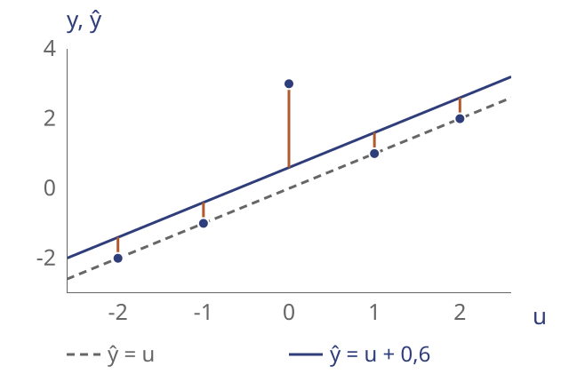
Hai ứng viên: $\hat y=u$ (nét đứt) và $\hat y=u+0{,}6$ (nét liền).
Dạng bậc hai của bình phương sai số
$X\in\mathbb{R}^{m\times n}$, $w\in\mathbb{R}^n$, $y\in\mathbb{R}^m$; $r=Xw-y$.
$$\|Xw-y\|_2^2=w^TX^TXw-2y^TXw+y^Ty.$$
Chứng nhận: Hessian $2X^TX$ nửa xác định dương vì
$$v^T(2X^TX)v=2\|Xv\|_2^2\ge0,\quad\forall v\in\mathbb{R}^n.$$
Chỉ khai triển biểu thức: giữ nguyên mục tiêu và biến quyết định.
Dạng phổ biến của quy hoạch bậc hai
$$\begin{aligned}
\min_{x\in\mathbb{R}^n}\;&\tfrac12x^TPx+q^Tx+r_0\\
\text{với}\quad&Gx\le h,\quad Ax=b.
\end{aligned}$$
$P=P^T\succeq0$: mục tiêu lồi.
Ràng buộc affine: tập khả thi lồi.
$P=0$: quy hoạch tuyến tính là một trường hợp riêng.
Nghiệm hồi quy bình phương tối thiểu
$$w^\star=\begin{pmatrix}1\\ 3/5\end{pmatrix},\qquad E(w^\star)=\frac{36}{5}$$
Dự đoán: $\hat y=u+0{,}6$. Câu hỏi: thêm $a\le 1/2$ thì sao?
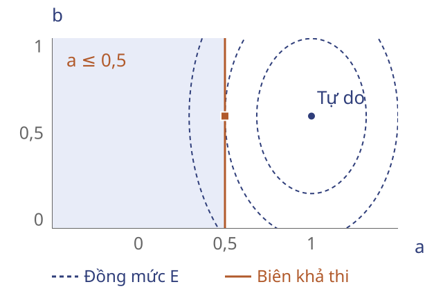
Đồng mức $E$; nghiệm tự do $(1;0{,}6)$; miền $a\le0{,}5$; nghiệm có ràng buộc $(0{,}5;0{,}6)$.
Chính quy hóa trong hồi quy
Cần vừa khớp dữ liệu, vừa kiểm soát độ lớn hệ số.
$$\min_w\;L(w)+\lambda R(w),\quad\lambda\ge0.$$
Sai số: $L(w)=\|r\|_1$ hoặc $\|r\|_2^2$.
Hình phạt: $R(w)=\|w\|_1$ hoặc $\|w\|_2^2$.
Chính quy hóa (regularization) thêm yêu cầu vào mô hình.
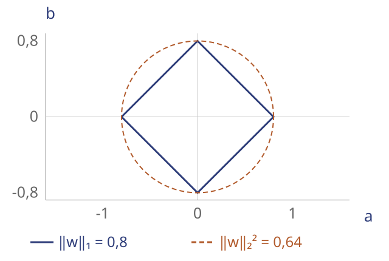
Sai số tuyệt đối và chính quy hóa chuẩn một
Với $\lambda\ge0$, $r=Xw-y$:
$$\min_w\;\|r\|_1+\lambda\|w\|_1.$$
Thêm biến phụ $t$ cho sai số, $v$ cho hệ số:
$$\begin{aligned}
\min_{w,t,v}\;&\mathbf1^Tt+\lambda\mathbf1^Tv\\
\text{với}\quad&-t\le Xw-y\le t,\quad -v\le w\le v.
\end{aligned}$$
Mục tiêu và ràng buộc affine: quy hoạch tuyến tính lồi.
Sai số tuyệt đối và chính quy hóa bậc hai
Với $\lambda\ge0$, $r=Xw-y$:
$$\min_w\;\|r\|_1+\lambda\|w\|_2^2.$$
Giữ hình phạt bậc hai; chỉ thêm biến phụ cho sai số:
$$\begin{aligned}
\min_{w,t}\;&\mathbf1^Tt+\lambda w^Tw\\
\text{với}\quad&-t\le Xw-y\le t.
\end{aligned}$$
Mục tiêu bậc hai lồi, ràng buộc affine: bài toán QP.
Bình phương sai số và chính quy hóa chuẩn một
Với $\lambda\ge0$, $r=Xw-y$:
$$\min_w\;\|r\|_2^2+\lambda\|w\|_1.$$
Giữ sai số bậc hai; thêm biến phụ cho hệ số:
$$\begin{aligned}
\min_{w,v}\;&\|Xw-y\|_2^2+\lambda\mathbf1^Tv\\
\text{với}\quad&-v\le w\le v.
\end{aligned}$$
Với $\lambda>0$, hàm gốc không trơn; cải dạng là QP lồi.
Bình phương sai số và chính quy hóa bậc hai
Với $\lambda\ge0$, $r=Xw-y$:
$$\min_w\;\|r\|_2^2+\lambda\|w\|_2^2.$$
Khối bậc hai sau khai triển:
$$P=2(X^TX+\lambda I)\succeq0.$$
Không cần biến phụ: đây là QP lồi.
$\lambda>0$: $P\succ0$, nghiệm $w$ duy nhất.
Nghiệm hồi quy có chính quy hóa
Cùng dữ liệu, bốn lựa chọn sai số và hình phạt.
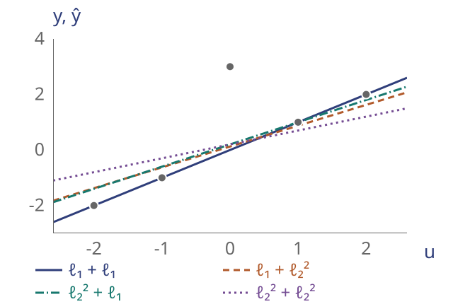
| Sai số + phạt | $\lambda$ | $w^\star$ | Dạng |
|---|
| $\ell_1+\ell_1$ | $4$ | $(1,0)$ | LP |
| $\ell_1+\ell_2^2$ | $4$ | $(3/4,1/8)$ | QP |
| $\ell_2^2+\ell_1$ | $4$ | $(4/5,1/5)$ | QP |
| $\ell_2^2+\ell_2^2$ | $10$ | $(1/2,1/5)$ | QP |
Câu hỏi: $\lambda=0$ khôi phục mô hình nào ở mỗi hàng?
Hồi quy với giới hạn độ lớn hệ số
Cần một mức trần bắt buộc cho độ lớn hệ số.
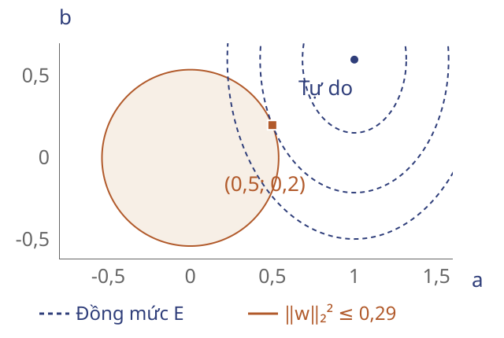
$$\begin{aligned}
\min_w\;&E(w)\\
\text{với}\quad&\|w\|_2^2\le\tfrac{29}{100}.
\end{aligned}$$
$w^\star=(1/2,1/5)$.
$E(w^\star)=21/2$.
Quy hoạch bậc hai với ràng buộc bậc hai
$$\begin{aligned}
\min_{x\in\mathbb R^n}\;&\tfrac12x^TP_0x+q_0^Tx+r_0\\
\text{với}\quad&\tfrac12x^TP_ix+q_i^Tx+r_i\le0,\quad i=1,\ldots,m,\\
&Ax=b.
\end{aligned}$$
Chứng nhận: $P_i=P_i^T\succeq0$ với $i=0,\ldots,m$.
Mục tiêu lồi; các bất đẳng thức lồi và đẳng thức affine xác định tập khả thi lồi.
Nhận dạng và chứng nhận bài toán bậc hai
Câu hỏi: Phân loại và giải thích từng biến thể.
1. Thêm $\|w\|_1\le R$, $R\ge0$, vào hồi quy bình phương sai số có chính quy hóa chuẩn một.
2. Đổi giới hạn thành $\|w\|_2^2\ge R^2$, $R>0$.
3. Đặt $\lambda=0$: có buộc $v=|w|$ tại nghiệm tối ưu?
4
Quy hoạch hình học
Hộp đựng và chi phí vật liệu
Cần thiết kế hộp kín có dung tích $8\,\mathrm{dm}^3$.
Chọn chiều dài, chiều rộng và chiều cao để dùng ít vật liệu nhất.
Cùng một vật liệu cho mọi mặt: chi phí tỉ lệ với diện tích bề mặt.
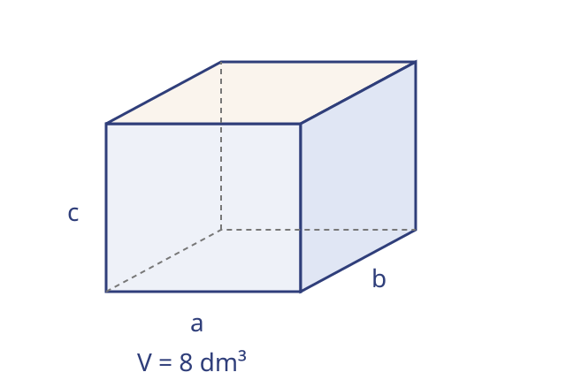
Mô hình thiết kế hộp
Biến quyết định: $a,b,c>0$, theo đơn vị chiều dài $1\,\mathrm{dm}$.
$$\begin{aligned}
\min_{a,b,c>0}\;&S(a,b,c)=2(ab+ac+bc)\\
\text{với}\quad&abc=8.
\end{aligned}$$
Tích kích thước xuất hiện ở cả mục tiêu và ràng buộc.
Đơn thức và tổng đơn thức dương
Miền $x\in\mathbb R_{++}^n$: mọi thành phần $x_i>0$.
$$m(x)=c\prod_{i=1}^n x_i^{\alpha_i},
\qquad c>0,\quad\alpha_i\in\mathbb R.$$
Ví dụ: $2x_1^{-1}x_2^{1/2}$ là một đơn thức.
$$f(x)=\sum_{k=1}^{K}c_k\prod_{i=1}^n x_i^{\alpha_{ik}},
\qquad c_k>0.$$
Tổng đơn thức dương (posynomial): tổng hữu hạn các đơn thức.
Dạng chuẩn của quy hoạch hình học
$$\begin{aligned}
\min_{x\in\mathbb R_{++}^n}\;&f_0(x)\\
\text{với}\quad&f_i(x)\le1,\quad i=1,\ldots,m,\\
&h_j(x)=1,\quad j=1,\ldots,p.
\end{aligned}$$
$f_0,\ldots,f_m$: tổng đơn thức dương; $h_1,\ldots,h_p$: đơn thức.
Dạng chuẩn này không nhất thiết lồi theo biến $x$.
Cải dạng về quy hoạch hình học
$f$: tổng đơn thức dương; $g,h,h_1,h_2$: đơn thức.
$$\begin{aligned}
f(x)\le g(x)&\iff f(x)/g(x)\le1,\\
h_1(x)=h_2(x)&\iff h_1(x)/h_2(x)=1.
\end{aligned}$$
$$\max_x h(x)\quad\longleftrightarrow\quad\min_x h(x)^{-1}.$$
Chia cho một đơn thức dương giữ đúng cấu trúc cần có.
Phép đổi biến logarit
Đặt $z_i=\log x_i$, tức $x_i=e^{z_i}$, với $i=1,\ldots,n$.
$$\log m(e^z)=\alpha^Tz+\log c.$$
$$\log f(e^z)=\log\left(\sum_{k=1}^{K}e^{\alpha_k^Tz+\beta_k}\right),
\quad\beta_k=\log c_k.$$
$c_ke^{\alpha_k^Tz}=e^{\alpha_k^Tz+\log c_k}$: hệ số dương được đưa vào số mũ.
Dạng lồi của quy hoạch hình học
$F_i(z)=\log f_i(e^z)$: logarit tổng hàm mũ của các biểu thức affine.
$$\begin{aligned}
\min_{z\in\mathbb R^n}\;&F_0(z)\\
\text{với}\quad&F_i(z)\le0,\quad i=1,\ldots,m,\\
&\gamma_j^Tz+\delta_j=0,\quad j=1,\ldots,p.
\end{aligned}$$
$F_i$ lồi; đẳng thức affine. Khôi phục $x^\star=e^{z^\star}$.
Cải dạng bài toán thiết kế hộp
$A=\log a$, $B=\log b$, $C=\log c$.
$$\begin{aligned}
\min_{A,B,C\in\mathbb R}\;&\log\left(2e^{A+B}+2e^{A+C}+2e^{B+C}\right)\\
\text{với}\quad&A+B+C=\log8.
\end{aligned}$$
Mục tiêu lồi; yêu cầu thể tích trở thành một mặt phẳng.
Khôi phục kích thước: $(a,b,c)=(e^A,e^B,e^C)$.
Kích thước hộp tối ưu
$$A^\star=B^\star=C^\star=\log2.$$
Hộp lập phương cạnh $2\,\mathrm{dm}$.
$$V=8\,\mathrm{dm}^3,\qquad S_{\min}=24\,\mathrm{dm}^2.$$
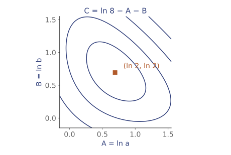
Đồng mức $\log S$ sau khi khử $C$ bằng ràng buộc thể tích.
Phân bổ công suất cho hai đường truyền
Hai đường truyền dùng chung một kênh vô tuyến.
Tăng công suất vừa tăng tín hiệu có ích, vừa gây nhiễu cho đường còn lại.
Chọn cách chia công suất để cải thiện đường truyền yếu nhất.
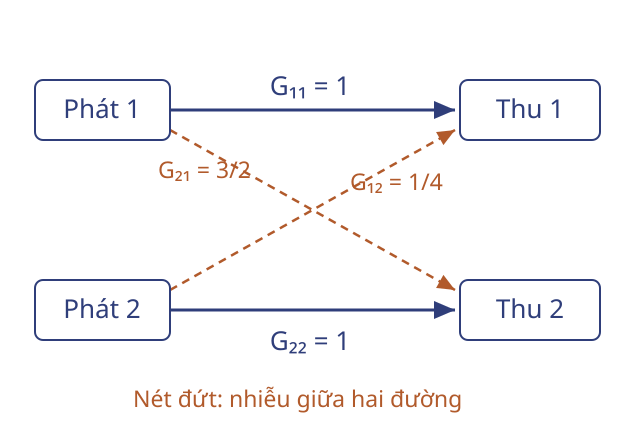
Mô hình chất lượng đường truyền
Tỷ số tín hiệu trên nhiễu và tạp âm (SINR):
Mẫu số gồm tạp âm nền bằng 1 và nhiễu từ đường còn lại.
$$S_1(p)=\frac{p_1}{1+p_2/4},\qquad
S_2(p)=\frac{p_2}{1+3p_1/2}.$$
$$\begin{aligned}
\max_{p_1,p_2>0}\;&\min\{S_1(p),S_2(p)\}\\
\text{với}\quad&p_1+p_2\le6.
\end{aligned}$$
Chia đều $(3,3)$: chất lượng yếu nhất chỉ đạt $6/11$.
Cải dạng bài phân bổ công suất
Ngưỡng $t>0$: $t\le S_1(p)\iff t(1+p_2/4)\le p_1$; tương tự cho $S_2$.
$$\begin{aligned}
\min_{p_1,p_2,t>0}\;&t^{-1}\\
\text{với}\quad&tp_1^{-1}+\tfrac14tp_2p_1^{-1}\le1,\\
&tp_2^{-1}+\tfrac32tp_1p_2^{-1}\le1,\\
&(p_1+p_2)/6\le1.
\end{aligned}$$
Mục tiêu là đơn thức; mỗi bất đẳng thức là tổng đơn thức dương.
Dạng lồi của bài phân bổ công suất
$z_1=\log p_1$, $z_2=\log p_2$, $\tau=\log t$.
$$\begin{aligned}
\min_{z_1,z_2,\tau\in\mathbb R}\;&-\tau\\
\text{với}\quad&\log\left(e^{\tau-z_1}+\tfrac14e^{\tau+z_2-z_1}\right)\le0,\\
&\log\left(e^{\tau-z_2}+\tfrac32e^{\tau+z_1-z_2}\right)\le0,\\
&\log\left(e^{z_1}+e^{z_2}\right)\le\log6.
\end{aligned}$$
Mục tiêu affine; các hàm bất đẳng thức là logarit tổng mũ lồi.
Nghiệm phân bổ công suất
$$p^\star=(2,4),\qquad t^\star=1.$$
Hai đường đạt cùng SINR bằng 1.
Chia đều $(3,3)$ chỉ đạt chất lượng nhỏ nhất $6/11$.
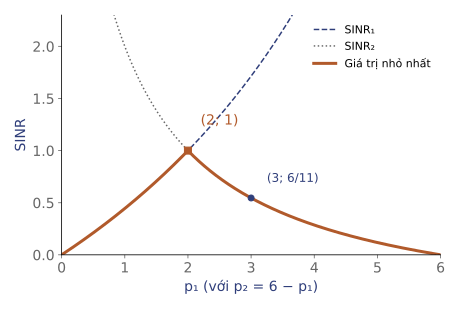
Cùng ngân sách 6, tăng công suất cho đường chịu nhiễu mạnh hơn.
Nhận dạng và giới hạn cải dạng
Câu hỏi: Hai câu đầu xét $x,y>0$.
1. $x+y\le xy$: đưa về dạng chuẩn. Đảo chiều bất đẳng thức thì sao?
2. $x+y=1$: có là đẳng thức đơn thức không? Có lồi theo $(x,y)$ không?
3. $\min x$ với $0\le x\le1$: đổi $x=e^z$ có giữ nghiệm tối ưu không?
5
Xấp xỉ lồi và nới lỏng bài toán không lồi
Phân loại bằng ngưỡng
Chọn ngưỡng $\theta$ cho bộ phân loại ảnh, chỉ dùng một đặc trưng chuẩn hóa $u$.
| $u_i$ | $y_i$ | Ý nghĩa |
|---|
| $-2$ | $-1$ | nhóm còn lại |
| $-1$ | $+1$ | nhóm cần tìm |
| $1$ | $-1$ | nhóm còn lại |
| $2$ | $+1$ | nhóm cần tìm |
Điểm số $s_\theta(u)=u-\theta$; dự đoán theo dấu điểm số.
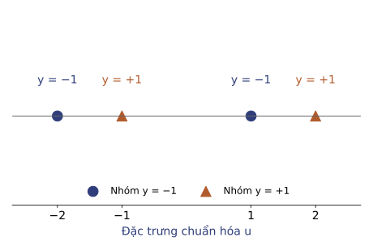
Dữ liệu minh họa: nhãn xen kẽ trên trục $u$.
Mô hình giảm số lỗi phân loại
Biên có dấu và hàm mất mát đếm lỗi.
$$r_i(\theta)=y_i(u_i-\theta),\qquad
\ell_{01}(r)=\begin{cases}1,&r\le0,\\0,&r>0.\end{cases}$$
$$\min_{\theta\in\mathbb R}\;\underbrace{\sum_{i=1}^{4}\ell_{01}\big(r_i(\theta)\big)}_{E(\theta)}.$$
$E$ là hàm bậc thang, không lồi; một ngưỡng không phân loại đúng cả bốn điểm.
Hàm mất mát bản lề
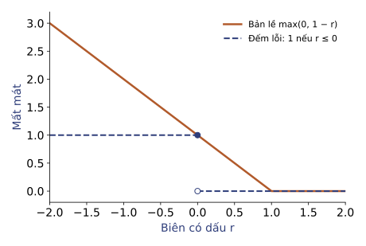
Hàm bản lề chặn trên mất mát đếm lỗi.
$$\ell_h(r)=\max(0,1-r)$$
Giá trị lớn nhất của hai hàm affine nên lồi.
$$\ell_{01}(r)\le\ell_h(r),\quad r\in\mathbb R.$$
$H(\theta)=\sum_i\ell_h(y_i(u_i-\theta))$ lồi theo $\theta$.
Cải dạng hàm bản lề thành LP
Biến phụ $\xi_i$ biểu diễn từng số hạng bản lề.
$$\begin{aligned}
\min_{\theta,\,\xi}\;&\sum_{i=1}^{4}\xi_i\\
\text{với}\quad&\xi_i\ge1-y_i(u_i-\theta),\quad i=1,\ldots,4,\\
&\xi_i\ge0,\quad i=1,\ldots,4.
\end{aligned}$$
Đây là LP, chính xác cho $H$; không chính xác cho $E$.
Nghiệm của hàm thay thế
| $\theta$ | $H(\theta)$ | $E(\theta)$ |
|---|
| $-1.5$ | $4.5$ | $1$ |
| $0$ | $4$ | $2$ |
$$\min_{\theta\in\mathbb R}H(\theta)=4.$$
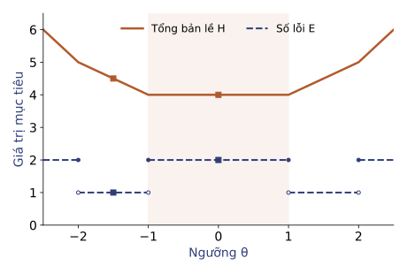
$H$ lồi, $E$ bậc thang; mọi $\theta\in[-1,1]$ tối ưu cho $H$.
Tối ưu $H$ không bảo đảm giảm số lỗi $E$ nhiều nhất.
Phân loại nhiều đặc trưng
$u_i\in\mathbb R^d$, $y_i\in\{\pm1\}$; chọn trước $\lambda\ge0$.
$$\begin{aligned}
\min_{w,b,\,\xi}\;&\frac{\lambda}{2}\|w\|_2^2+\sum_{i=1}^{m}\xi_i\\
\text{với}\quad&y_i(w^Tu_i+b)\ge1-\xi_i,\quad i=1,\ldots,m,\\
&\xi_i\ge0,\quad i=1,\ldots,m.
\end{aligned}$$
Hessian $\operatorname{diag}(\lambda I,0,0)$ nửa xác định dương, ràng buộc affine: bài toán QP; khi $\lambda=0$ thành LP.
Chọn các gói dữ liệu
Nhóm phát triển mô hình nhận diện người đi bộ cần mua ảnh đã gán nhãn, đủ ba bối cảnh.
| Gói | Ảnh có sẵn | Giá minh họa (triệu đồng) |
|---|
| 1 | Ngày khô, đêm khô | 2 |
| 2 | Đêm khô, trời mưa | 2 |
| 3 | Ngày khô, trời mưa | 2 |
Mua trọn gói, mỗi gói tối đa một lần. Chọn các gói đủ ba bối cảnh với tổng chi phí thấp nhất.
Mô hình chọn gói dữ liệu
$x_j=1$ nếu mua trọn gói $j$, $x_j=0$ nếu không mua, $j=1,2,3$.
$$\begin{aligned}
\min_{x}\;&2(x_1+x_2+x_3)\quad\text{(triệu đồng)}\\
\text{với}\quad&x_1+x_3\ge1\quad(\text{ngày khô}),\\
&x_1+x_2\ge1\quad(\text{đêm khô}),\\
&x_2+x_3\ge1\quad(\text{trời mưa}),\\
&x_j\in\{0,1\},\quad j=1,2,3.
\end{aligned}$$
Ảnh ngày khô có trong gói 1 hoặc gói 3, nên $x_1+x_3\ge1$.
Nới lỏng điều kiện nhị phân
Bài mua nguyên gói: $x_j\in\{0,1\}$
Bài nới lỏng: $0\le x_j\le1$
$$\begin{aligned}
\min_{x}\;&2(x_1+x_2+x_3)\quad\text{(triệu đồng)}\\
\text{với}\quad&x_1+x_3\ge1,\;\;x_1+x_2\ge1,\;\;x_2+x_3\ge1,\\
&0\le x_j\le1,\quad j=1,2,3.
\end{aligned}$$
Giữ mục tiêu và các ràng buộc phủ, thu được LP. Chỉ mô hình được nới lỏng; nhà cung cấp vẫn bán nguyên gói.
Nghiệm phân số của bài nới lỏng
$$x^R=\left(\tfrac12,\tfrac12,\tfrac12\right)$$
$$2\left(\tfrac12+\tfrac12+\tfrac12\right)=3\ \text{triệu đồng}$$
| Bối cảnh | Kiểm tra |
|---|
| Ngày khô | $x_1+x_3=\tfrac12+\tfrac12=1$ |
| Đêm khô | $x_1+x_2=\tfrac12+\tfrac12=1$ |
| Trời mưa | $x_2+x_3=\tfrac12+\tfrac12=1$ |
Bài nới lỏng đạt chi phí 3 triệu đồng. Nghiệm này chưa phải phương án mua hợp lệ.
Khôi phục phương án mua
Từ $x^R=(1/2,1/2,1/2)$: làm tròn lên cho $(1,1,1)$, mua cả ba gói, chi phí 6 triệu đồng.
| Phương án | Đủ ba bối cảnh | Chi phí (triệu đồng) |
|---|
| $(0,0,0)$ — làm tròn xuống | Không | 0 |
| $(1,1,1)$ — làm tròn lên | Có | 6 |
| $(1,1,0)$ — bỏ gói 3 | Có | 4 |
Gói 1 có ngày khô và đêm khô; gói 2 bổ sung trời mưa. Bỏ gói 3 khỏi $(1,1,1)$ vẫn đủ ba bối cảnh, chi phí giảm còn 4.
Cận dưới và chứng nhận nghiệm
$p^*$: chi phí nhỏ nhất khi mua nguyên gói, tính bằng triệu đồng.
Cận dưới từ LP: 3 triệu đồng
Phương án mua gói 1 + 2: 4 triệu đồng
$$3\le p^*\le4$$
Chi phí mua nguyên gói là bội của 2 triệu đồng.
Trong khoảng $[3,4]$ chỉ có 4 là bội của 2.
Phương án mua gói 1 và gói 2 là tối ưu.
Phân biệt ba cách xử lý
| Cách xử lý | Bảo toàn | Ý nghĩa nghiệm |
|---|
| Cải dạng chính xác ($H$ → LP) | Giá trị $H$ | Khôi phục ngưỡng tối ưu cho $H$ |
| Hàm thay thế ($E\to H$) | Không giữ mục tiêu | Đánh giá $E$ riêng tại nghiệm đã học |
| Nới lỏng ($F\to R$) | Giữ mục tiêu; mở rộng miền | Cần khôi phục phương án |
Đánh giá nghiệm theo bài toán gốc
Câu hỏi:
- Với một tập dữ liệu khác, hàm bản lề có $H=0$: có suy ra $E=0$ trên tập huấn luyện? Trên dữ liệu mới thì sao?
- Phương án khả thi LP với chi phí 6: có phải cận dưới của bài gốc không?
- Nếu nghiệm tối ưu LP đã nhị phân thì kết luận gì?